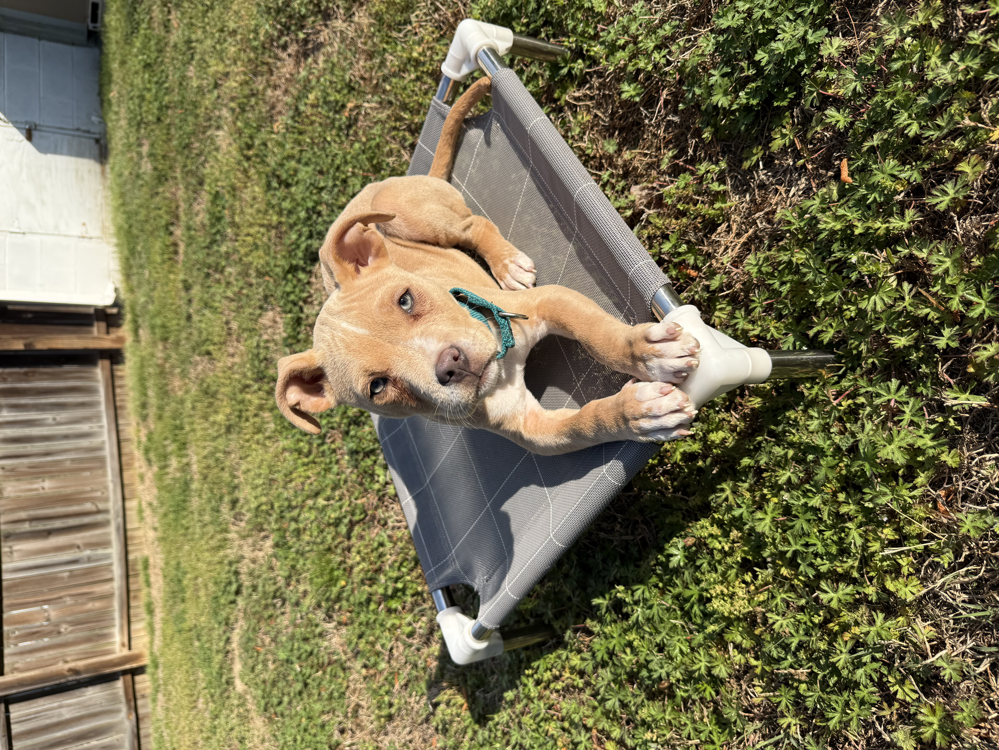

The staircase
Train in small steps. If something’s hard, make it easier and win there—then build back up.

Crowned K9s Foundations Rescue
Stella · Born Dec 22, 2025 ·
Pit Mix · Private Foundations family playbook

Lead with Confidence, Train with Crowned K9s.
Start here
These three words are the whole communication system Stella already knows from her time with us. You don’t need special equipment—just say the words at the right time and follow through with treats or praise. Every command in this playbook assumes you’re using this trio the same way.
Means: “That was correct right now.” Say “Yes” the split-second she does what you want (butt hits the floor on Sit, eyes find you on her name, etc.), then give the treat or praise. Think of it like a camera shutter—you’re capturing one moment so she knows exactly what earned the reward.
Means: “Keep holding that.” Use it when you want her to stay in a behavior a little longer—still sitting on Place, still frozen in Wait at the door—before you end the rep. You can say “Good” once or twice; you’re not feeding yet, just confirming she’s on track.
Means: “We’re done with that request—you can move again.” Free is her release word. After Sit, Down, Place, or Wait, she should wait for “Free” before getting up or walking through. Use “Free” all day (not only in “training time”) so the rule stays obvious: she holds the behavior until she hears it.
Your #1 daytime structure
These four events drive almost every potty need. When in doubt, take Stella out—boring trip outside beats an accident inside.
Overnight: Stella is already sleeping through the night—roughly 10:00 PM to 7:30 AM. Keep that window consistent in your home; first trip out when she’s up.
When you reach her potty spot, say “Hurry up” once (or as she starts to sniff / squat). Neutral means: no baby talk, no tug or chase—stand boring like a lamp post until she goes. The moment she finishes outside, say “Yes” and pay big (treat, happy tone). She already pairs those words with potty; your job is to keep the phrase and the payoff consistent.
Bathroom → short engagement → eat → bathroom (trigger #1) → nap → bathroom (trigger #3) → play → bathroom (trigger #4).
Know your pup
She’s familiar with boundaries. Decide what’s allowed in your home and stay consistent—examples many families use: no unsupervised kitchen, no furniture/couch until you invite her, or gated areas so expectations stay crystal clear.
Clarity = calm. Mixed messages (sometimes allowed on couch, sometimes not) slow everyone down.
Foundations
Stella has a solid start, not a finished competition routine. These ideas keep practice fair: small wins, short sessions, and clear endings—so neither of you gets frustrated.
Train in small steps. If something’s hard, make it easier and win there—then build back up.
Keep reps short (often 1–2 minutes). End on a success while she’s still engaged.
A repetition “counts” when you choose to say Free after she held the behavior. If she pops up early on her own, don’t argue—make the next try shorter or easier, then Yes and pay so she trusts the game again.
Use the words she knows; let timing, body language, and rewards do most of the talking.
What she knows
Stella learned these with Crowned K9s using the Yes / Good / Free system above. She recognizes the behaviors; she still needs to learn that your voice, timing, and rewards mean the same thing. Practice in a quiet room first, 3–6 reps at a time, always ending on something she nails. If a word is new to you, read the “Means” line out loud a few times so you’re not guessing mid-session.
Means
Look at me / check in.
Your practice
Low-distraction games several times a day. Her name = eyes on you, not just “I heard a sound.”
Means
Bottom on the floor—great default before food, doorways, greetings.
Your practice
Yes when she sits; release with Free when you’re done holding the position.
Means
Settle position—hips down, calmer body.
Your practice
Build short duration with Good, then Free. End on a win.
Means
Go to her bed/mat and stay until Free.
Your practice
One clear spot in each room at first. Reward staying; don’t let her self-release.
Means
Pause—don’t move through the threshold (crate, door, gate) until Free.
Your practice
Meals, exits, and car loading are perfect practice spots.
Means
Eliminate outside—now.
Your practice
Say it once as she starts; stay boring. When she finishes—Yes and a real payoff.
Where she’s at
Introduced means she’s heard the word in easy setups. Not proofed means we did not drill it with heavy distance, other dogs, or big distractions—that level takes more time.
Your practice
Only call Come when she’s already likely to move toward you (short distance, low distraction). If you’re not sure, walk over, clip the leash, or use her name + pat your legs—then reward when she commits. We can build a stronger recall in private lessons if you want it rock-solid later.
Calm comes from clarity
Practice Wait at thresholds—inside doors, outside doors, gates, crate. Release with Free when you’re ready. Impulse control at doorways makes the rest of life easier.
Pick your boundaries (kitchen, couch, rooms) and keep them consistent. Stella does well when the rules don’t shift day to day.
Use Place and a dog bed she loves as “off switches” during busy home life—meals, guests, TV time.
Welcome home
Foundations Rescue means Stella was developed in our program before placement, but your home is new to her—questions are expected. Text or email anytime something feels unclear; we’d rather fix a small confusion early than have you guess.
Lead with Confidence, Train with Crowned K9s.
Text: 919-816-2426 · lorenzo@crownedk9s.com · crownedk9s.com